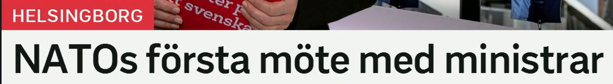
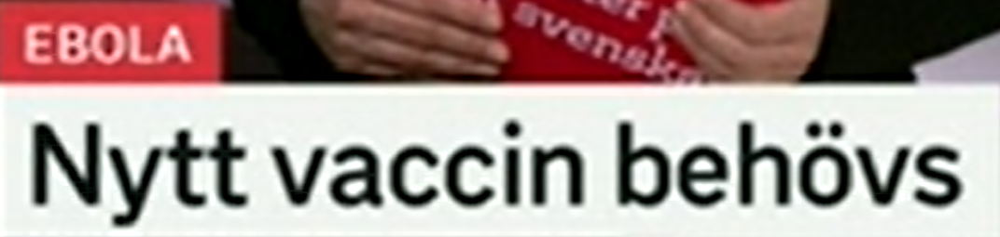
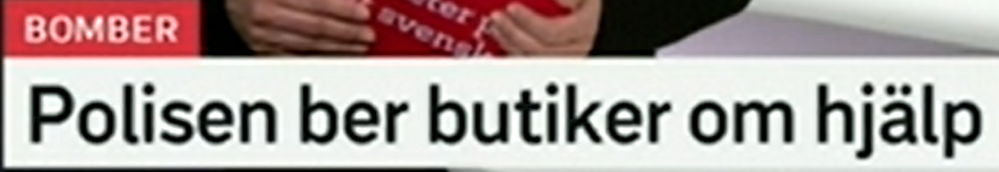
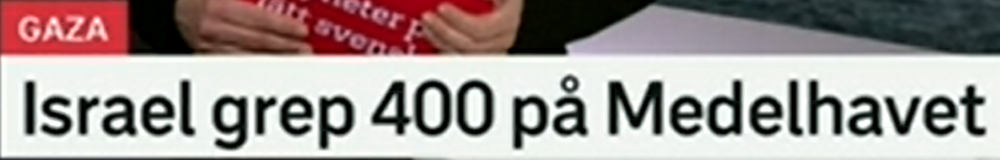

NATOs första möte med ministrar
NATO 与部长们的首次会议。
NATO 加 -s 表示“北约的”。也常写 NATO:s。类似：EU:s、FN:s、USA:s。
NATOs möte hålls i Helsingborg. 北约会议在赫尔辛堡举行。
第一、首次。序数词：andra 第二，tredje 第三，sista 最后。常见搭配：första gången 第一次。
Det är första gången hon besöker Sverige. 这是她第一次访问瑞典。
ett möte 会议；en minister 部长。相关词：utrikesminister 外交部长，försvarsminister 国防部长，ministermöte 部长会议。
Regeringen har möte med flera ministrar. 政府与多位部长开会。
所有格结构
NATOs första möte = NATO 的第一次会议。瑞典语所有格通常直接加 -s，后面的名词不加冠词。

Nytt vaccin behövs
需要新的疫苗。
ny 新的；修饰 ett 词时变 nytt。例如 ett nytt beslut 一个新决定，ett nytt problem 一个新问题。
Ett nytt fall har upptäckts. 发现了一例新病例。
ett vaccin 疫苗。相关词：vaccinera 接种疫苗，vaccination 疫苗接种，skydd 保护。
Vaccinet ger skydd mot sjukdomen. 疫苗能预防这种疾病。
原形 behöva 需要；behövs = 被需要、需要有。这个词在新闻里很常见，因为不用说“谁需要”。
Mer pengar behövs till vården. 医疗需要更多资金。
需求标题
X behövs = 需要 X。完整一点可说：Det behövs ett nytt vaccin.

Polisen ber butiker om hjälp
警方请求商店协助。
polisen 可指“警方”这个机构，也可指“那名警察”。相关词：polis 警察，utredning 调查，misstänkt 嫌疑人/可疑的。
Polisen utreder händelsen. 警方正在调查该事件。
原形 be 请求；be någon om hjälp 请求某人帮助。过去式是 bad，完成式 bett。
Hon ber grannen om hjälp. 她向邻居求助。
en butik 商店；近义 affär。相关词：butiksägare 店主，personal 员工，kund 顾客。
Flera butiker stänger tidigare. 多家商店提前关门。
hjälp 帮助；动词 hjälpa。搭配：få hjälp 得到帮助，söka hjälp 寻求帮助，akut hjälp 紧急援助。
De behöver hjälp från allmänheten. 他们需要公众帮助。
请求结构
be någon om något = 向某人请求某物/某事。标题中 Polisen ber butiker om hjälp 结构非常完整，适合直接背。

Israel grep 400 på Medelhavet
以色列在地中海抓捕/扣押 400 人。
原形 gripa，抓捕、逮捕；过去式 grep，完成式 gripit。相关词：gripande 逮捕，anhålla 拘留，frihetsberöva 剥夺自由。
Polisen grep två personer. 警方逮捕了两人。
标题中常省略 personer，所以 grep 400 可理解为“抓捕 400 人”。正式句可写 grep 400 personer。
Myndigheterna evakuerade 400 personer. 当局疏散了 400 人。
Medelhavet 地中海。海上通常用 på：på Östersjön 在波罗的海上，på Nordsjön 在北海上。
Fartyget befann sig på Medelhavet. 船当时在地中海上。
过去式标题
A grep B på C = A 在 C 地抓捕 B。新闻标题用过去式 grep，说明事件已经发生。
复习表：把短标题变成词汇组
| 关键词 | 延伸词汇 | 记忆角度 |
|---|---|---|
| första | andra, tredje, sista, första gången | 序数与顺序 |
| möte | ministermöte, hålla möte, delta i möte | 会议表达 |
| vaccin | vaccinera, vaccination, skydd, sjukdom | 医疗防疫 |
| behövs | behöva, det behövs, nödvändig, behov | 需求表达 |
| be om hjälp | hjälpa, få hjälp, söka hjälp, allmänheten | 请求帮助 |
| gripa | grep, gripit, gripande, anhålla, misstänkt | 警方行动 |
练习 1
说“需要更多帮助”。提示：Mer hjälp behövs.
练习 2
用 be ... om hjälp 写“警方请求公众帮助”。提示：Polisen ber allmänheten...
练习 3
把“警方逮捕了三人”译成瑞典语。提示：Polisen grep...
练习 4
用 första gången 写“这是第一次”。提示：Det är...